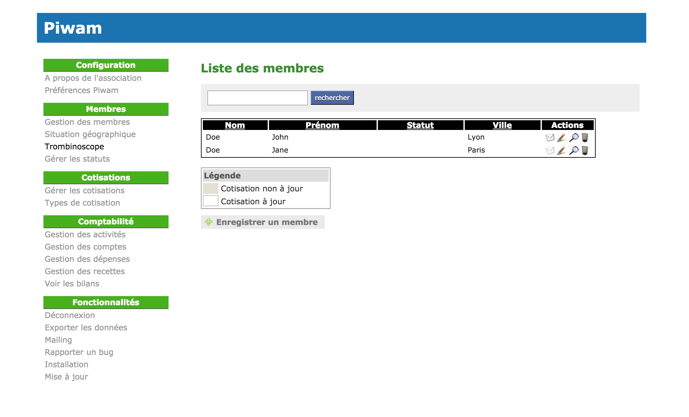

Qu'est-ce que c'est ?
Cette application est un portage du projet Piwam, qui est un excellent gestionnaire d'association dont le développement a malheureusement été abandonné par son créateur. L'application a donc été entièrement ré-écrite en Ruby on Rails.

Que puis-je gérer avec Piwam ?
Piwam vous permet de gérer les activités d'une association ainsi que d'éditer divers rapports comptables :
- membres
- cotisations
- recettes / dépenses
- activités
Installation
bundle install
rake db:setup
rails s
Requiert Ruby 2.2.0 ou supérieur et MySQL.